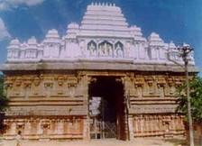

|
NAGALAPURAM VEDANARAYANA SWAMY TEMPLE Temple reflects the Vijayanagara architectural style Vedanarayana swamy idol facing west. Temple has got 4 big gali gopurams. The sanctum sanctorum has Vedanarayana swamy with his consorts Sridevi and Bhoodevi on either side. This is a Matysa avatara of Vishnu, who saved the four vedas from Somakudu and returned to Brahma.
Annual Festival Temple brahmostavam comes on Shukla Dwadasi, Trayodasi and Chaturdasi of Phalguni masam (telugu calendar). Temple architecture is done in such a way that during these three days, the sun rays fall on the feet of the main deity, navel and fore head. Temple Management The temple is under TTD. There is daily TTD bus service from Tirumala to Nagalapuram and other temples.
TEMPLE Sri Veda Narayanaswami Temple is located in Nagalapuram, 70 km south-east of Tirupati. It is believed that Lord Sri Maha Vishnu, in the form of Matsya, killed the rakshasa (demon) Somakudu here, and retrieved the Vedas from the latter. The sanctum sanctorum houses an image of the Matsya form of Vishnu, with Sridevi and Bhudevi on either side. A peculiar feature of the idol is that it holds the Sudarsana Chakra in prayoga (ready for release). The temple was constructed by Sri Krishnadeva Raya, the Vijayanagara emperor, and is a fine specimen of the Vijayanagara style of architecture. The sub-temples within the main temple are: · Sri Vedavalli Tayaru · Sri Lakshmi Narasimha Swami temple · Sri Veeranjaneya Swami temple · Sri Bhakta Anjaneya Swami temple · Sri Sita Lakshmana Sameta Ramulavari temple The most important annual festivals in this temple are Brahmotsavam, and Surya Puja along with the Float festival, conducted on the 12th, 13th and 14th days of the month of Phalguna. The annual Brahmotsavam is conducted in the month of Jyeshtha. The other important sevas conducted in the temple are: · Float Festival during Surya Pooja · Vaikunta Ekadasi · Andal Neeratotsavam · Bhogi · Sankranti and Kanumu · Rathasapthami · Kanchi Garuda Seva |